pacman::p_load(arrow, lubridate, tidyverse, tmap, sf, maptools, spatstat, raster, dplyr, rmapshaper)
## install.packages("maptools", repos = "https://packagemanager.posit.co/cran/2023-10-13")Take-home Exercise 1
Overview
Setting the scene
Understanding how people move around in a city is like figuring out its heartbeat—it shows us the rhythms that shape our urban lives. Thanks to smartphones and technology, we now have a bunch of data about how people move. When we use smart analysis tools like Geographic Information System (GIS), we can unlock valuable insights that help us plan cities better.
In 2020, GRAB, a big taxi company, shared a cool set of data called Grab Posisi, all about how people move around in Singapore. It’s like a special view into the city’s heartbeat. This kind of information isn’t just interesting; it’s super helpful for businesses, people who make decisions about the city, and those who plan how cities work. It’s like having a dynamic picture of how folks move, helping us create cities that work well for everyone. Human mobility data isn’t just about numbers—it’s like a guide for building cities that fit the way people live and move.
Objectives
The objectives of this exercise are to:
Apply geospatial analytics to address societal challenges
Use spatial point patterns analysis methods to explore Grab hailing services distribution in Singapore
Organize geospatial data into sf tibble data.frames using sf and tidyverse functions
Focus on Grab taxi location points (origins or destinations), road layer within Singapore (excluding outer islands), and Singapore boundary layer (excluding outer islands)
Generate traditional Kernel Density Estimation layers from the extracted data
Create either Network Kernel Density Estimation (NKDE) or Temporal Network Kernel Density Estimation (TNKDE) layers
Utilize tmap functions to display kernel density layers on an openstreetmap of Singapore
Describe spatial patterns revealed by the kernel density maps
By this exercise, I will:
- Enhance my understanding of geospatial analytics applications Develop proficiency in spatial point patterns analysis
- Gain hands-on experience in organizing geospatial data using sf and tidyverse functions
- Explore Grab hailing services distribution patterns in Singapore
- Generate and interpret Kernel Density Estimation layers
- Understand the nuances of Network Kernel Density Estimation (NKDE) or - Temporal Network Kernel Density Estimation (TNKDE)
- Master the visualization of spatial patterns using tmap functions on an openstreetmap
Getting Started
Data Acquisition
The study will utilise the following datasets to explore spatial point patterns analysis methods and reveal the geographical and spatio-temporal distribution of Grab hailing services locations in Singapore.
| Dataset Name | Type | Source | Path |
|---|---|---|---|
| Grab-Posisi | Aspatial (.parquet) | https://engineering.grab.com/grab-posisi | data/aspatial/grabPosisi |
| Master Plan 2019 Subzone Boundary (No Sea) | Geospatial (.kml) | https://beta.data.gov.sg/collections/2104/view | data/geospatial/MasterPlan2019SubzoneBoundaryNoSeaKML |
| Open Street Map Raod Data | Geospatial (.shp) | https://download.geofabrik.de/asia/malaysia-singapore-brunei.html | data/geospatial/OSM/gis_osm_roads_free_1 |
Installing Packages & Importing the Data
Install Relevant R Packages
The R packages used in this project are:
sf: for importing, managing, and processing geospatial data.tidyverse: a family of other R packages for performing data science tasks such as importing, wrangling, and visualising data.tmap: creating thematic mapsmaptools: a set of tools for manipulating geographic dataraster: reads, writes, manipulates, analyses, and model gridded spatial data (raster)spatstat: for performing spatial point patterns analysissfdep: for analysing spatial dependenciesdplyr
Pacman assists us by helping us load R packages that we require.
Importing Geospatial Datasets
Master Plan 2019 Subzone Boundary (No Sea)
mpsz = st_read("data/geospatial/MasterPlan2019SubzoneBoundaryNoSeaKML.kml")Reading layer `URA_MP19_SUBZONE_NO_SEA_PL' from data source
`C:\fathimak2020\IS415-GAA\Take-home_Ex\Take-home_Ex01\data\geospatial\MasterPlan2019SubzoneBoundaryNoSeaKML.kml'
using driver `KML'
Simple feature collection with 332 features and 2 fields
Geometry type: MULTIPOLYGON
Dimension: XY, XYZ
Bounding box: xmin: 103.6057 ymin: 1.158699 xmax: 104.0885 ymax: 1.470775
z_range: zmin: 0 zmax: 0
Geodetic CRS: WGS 84Open Street Map Road Data
allroads = st_read(dsn = "data/geospatial/OSM",
layer = "gis_osm_roads_free_1")Reading layer `gis_osm_roads_free_1' from data source
`C:\fathimak2020\IS415-GAA\Take-home_Ex\Take-home_Ex01\data\geospatial\OSM'
using driver `ESRI Shapefile'
Simple feature collection with 1759836 features and 10 fields
Geometry type: LINESTRING
Dimension: XY
Bounding box: xmin: 99.66041 ymin: 0.8021131 xmax: 119.2601 ymax: 7.514393
Geodetic CRS: WGS 84Importing Aspatial Datasets
Grab-Posisi
grab <- read_parquet("data/aspatial/GrabPosisi/part-00000.parquet")
glimpse(grab)Rows: 3,034,553
Columns: 9
$ trj_id <chr> "70014", "73573", "75567", "1410", "4354", "32630", "646…
$ driving_mode <chr> "car", "car", "car", "car", "car", "car", "car", "car", …
$ osname <chr> "android", "android", "android", "android", "android", "…
$ pingtimestamp <int> 1554943236, 1555582623, 1555141026, 1555731693, 15555844…
$ rawlat <dbl> 1.342326, 1.321781, 1.327088, 1.262482, 1.283799, 1.3003…
$ rawlng <dbl> 103.8890, 103.8564, 103.8613, 103.8238, 103.8072, 103.90…
$ speed <dbl> 18.910000, 17.719076, 14.021548, 13.026521, 14.812943, 2…
$ bearing <int> 248, 44, 34, 181, 93, 73, 82, 321, 324, 31, 203, 50, 252…
$ accuracy <dbl> 3.900, 4.000, 3.900, 4.000, 3.900, 3.900, 3.000, 3.649, …The field ‘pingtimestamp’ is not in proper date-time format. The following code chunk converts the data type of pingtimestamp from character to date-time format.
grab$pingtimestamp <- as_datetime(grab$pingtimestamp)Converting Aspatial Data Frame into a Simple Feature Data Frame
Assumption: The data is in the wgs84 Geographic Coordinate System on account of its latitude/longtitude fields. WGS84 = EPSG4326, 3414 = SVY21
grab_sf <- st_as_sf(grab,
coords = c("rawlng", "rawlat"),
crs=4326) %>%
st_transform(crs = 3414)This gives us the new simple feature data frame, grab_sf:
glimpse(grab_sf)Rows: 3,034,553
Columns: 8
$ trj_id <chr> "70014", "73573", "75567", "1410", "4354", "32630", "646…
$ driving_mode <chr> "car", "car", "car", "car", "car", "car", "car", "car", …
$ osname <chr> "android", "android", "android", "android", "android", "…
$ pingtimestamp <dttm> 2019-04-11 00:40:36, 2019-04-18 10:17:03, 2019-04-13 07…
$ speed <dbl> 18.910000, 17.719076, 14.021548, 13.026521, 14.812943, 2…
$ bearing <int> 248, 44, 34, 181, 93, 73, 82, 321, 324, 31, 203, 50, 252…
$ accuracy <dbl> 3.900, 4.000, 3.900, 4.000, 3.900, 3.900, 3.000, 3.649, …
$ geometry <POINT [m]> POINT (34193.29 36053.13), POINT (30564.99 33781.3…Note that a new column called geometry has been added! In addition, longtitude and latitude have both been dropped.
Project Transformation
coordinate system differed among our data frames: mpsz and road are wgs84. while grab is svy21, we might run into issues when we’re performing geoprocessing, because a geographic coordinate system is not appropriate if our analysis needs distance or/and area measurements.
For MPSZ, CRS is WGS84
st_crs(mpsz)Coordinate Reference System:
User input: WGS 84
wkt:
GEOGCRS["WGS 84",
DATUM["World Geodetic System 1984",
ELLIPSOID["WGS 84",6378137,298.257223563,
LENGTHUNIT["metre",1]]],
PRIMEM["Greenwich",0,
ANGLEUNIT["degree",0.0174532925199433]],
CS[ellipsoidal,2],
AXIS["geodetic latitude (Lat)",north,
ORDER[1],
ANGLEUNIT["degree",0.0174532925199433]],
AXIS["geodetic longitude (Lon)",east,
ORDER[2],
ANGLEUNIT["degree",0.0174532925199433]],
ID["EPSG",4326]]Output shows that it is in WGS 84 and EPSG 4326.We want to covert to the correct EPSG code for svy21 which is 3414.
#st_geometry_type(mpsz)
mpsz <- st_cast(mpsz, "MULTIPOLYGON")
mpsz <- st_zm(mpsz) # Convert all sub-geometries to 2D
mpsz3414 <- st_transform(mpsz, crs = 3414)
#mpsz3414 <- st_set_crs(mpsz, 3414)
#st_crs(mpsz3414)st_crs(allroads)Coordinate Reference System:
User input: WGS 84
wkt:
GEOGCRS["WGS 84",
DATUM["World Geodetic System 1984",
ELLIPSOID["WGS 84",6378137,298.257223563,
LENGTHUNIT["metre",1]]],
PRIMEM["Greenwich",0,
ANGLEUNIT["degree",0.0174532925199433]],
CS[ellipsoidal,2],
AXIS["latitude",north,
ORDER[1],
ANGLEUNIT["degree",0.0174532925199433]],
AXIS["longitude",east,
ORDER[2],
ANGLEUNIT["degree",0.0174532925199433]],
ID["EPSG",4326]]Output shows that it is in WGS 84 and EPSG 4326.We want to covert to the correct EPSG code for svy21 which is 3414.
allroads3414 <- st_transform(allroads,crs =3414)
#allroads3414 <- st_set_crs(allroads, 3414)
#st_crs(allroads3414)st_crs(grab_sf)Coordinate Reference System:
User input: EPSG:3414
wkt:
PROJCRS["SVY21 / Singapore TM",
BASEGEOGCRS["SVY21",
DATUM["SVY21",
ELLIPSOID["WGS 84",6378137,298.257223563,
LENGTHUNIT["metre",1]]],
PRIMEM["Greenwich",0,
ANGLEUNIT["degree",0.0174532925199433]],
ID["EPSG",4757]],
CONVERSION["Singapore Transverse Mercator",
METHOD["Transverse Mercator",
ID["EPSG",9807]],
PARAMETER["Latitude of natural origin",1.36666666666667,
ANGLEUNIT["degree",0.0174532925199433],
ID["EPSG",8801]],
PARAMETER["Longitude of natural origin",103.833333333333,
ANGLEUNIT["degree",0.0174532925199433],
ID["EPSG",8802]],
PARAMETER["Scale factor at natural origin",1,
SCALEUNIT["unity",1],
ID["EPSG",8805]],
PARAMETER["False easting",28001.642,
LENGTHUNIT["metre",1],
ID["EPSG",8806]],
PARAMETER["False northing",38744.572,
LENGTHUNIT["metre",1],
ID["EPSG",8807]]],
CS[Cartesian,2],
AXIS["northing (N)",north,
ORDER[1],
LENGTHUNIT["metre",1]],
AXIS["easting (E)",east,
ORDER[2],
LENGTHUNIT["metre",1]],
USAGE[
SCOPE["Cadastre, engineering survey, topographic mapping."],
AREA["Singapore - onshore and offshore."],
BBOX[1.13,103.59,1.47,104.07]],
ID["EPSG",3414]]Note: Grab’s transformation already occured in earlier step
#outline <- plot(st_geometry(mpsz))##for backup
outline <- st_read(dsn = "data/geospatial", layer="CostalOutline")Reading layer `CostalOutline' from data source
`C:\fathimak2020\IS415-GAA\Take-home_Ex\Take-home_Ex01\data\geospatial'
using driver `ESRI Shapefile'
Simple feature collection with 60 features and 4 fields
Geometry type: POLYGON
Dimension: XY
Bounding box: xmin: 2663.926 ymin: 16357.98 xmax: 56047.79 ymax: 50244.03
Projected CRS: SVY21
Tip
✅ Task Complete! Singapore boundary layer excluding outer islands
st_crs(outline)Coordinate Reference System:
User input: SVY21
wkt:
PROJCRS["SVY21",
BASEGEOGCRS["SVY21[WGS84]",
DATUM["World Geodetic System 1984",
ELLIPSOID["WGS 84",6378137,298.257223563,
LENGTHUNIT["metre",1]],
ID["EPSG",6326]],
PRIMEM["Greenwich",0,
ANGLEUNIT["Degree",0.0174532925199433]]],
CONVERSION["unnamed",
METHOD["Transverse Mercator",
ID["EPSG",9807]],
PARAMETER["Latitude of natural origin",1.36666666666667,
ANGLEUNIT["Degree",0.0174532925199433],
ID["EPSG",8801]],
PARAMETER["Longitude of natural origin",103.833333333333,
ANGLEUNIT["Degree",0.0174532925199433],
ID["EPSG",8802]],
PARAMETER["Scale factor at natural origin",1,
SCALEUNIT["unity",1],
ID["EPSG",8805]],
PARAMETER["False easting",28001.642,
LENGTHUNIT["metre",1],
ID["EPSG",8806]],
PARAMETER["False northing",38744.572,
LENGTHUNIT["metre",1],
ID["EPSG",8807]]],
CS[Cartesian,2],
AXIS["(E)",east,
ORDER[1],
LENGTHUNIT["metre",1,
ID["EPSG",9001]]],
AXIS["(N)",north,
ORDER[2],
LENGTHUNIT["metre",1,
ID["EPSG",9001]]]]outline3414 <- st_transform(outline,crs =3414)
plot(outline3414)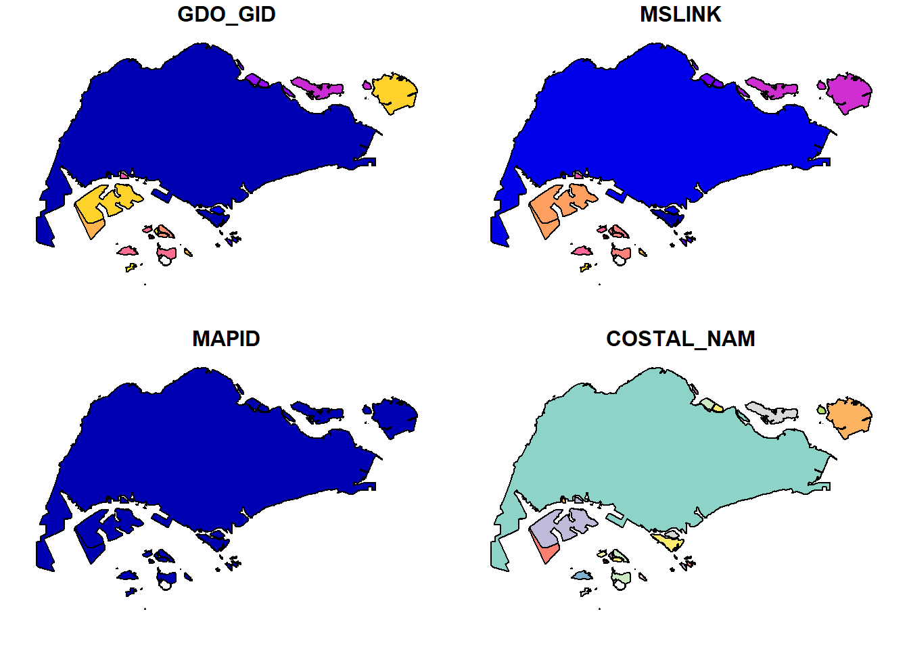
Now they are all in svy21 projected coordinate system!
Road intersection with SG coastline
sg_roads <- st_intersection(outline3414,allroads3414)Warning: attribute variables are assumed to be spatially constant throughout
all geometriessummary(sg_roads) GDO_GID MSLINK MAPID COSTAL_NAM
Min. : 1.000 Min. : 1.000 Min. :0 Length:232877
1st Qu.: 5.000 1st Qu.: 7.000 1st Qu.:0 Class :character
Median : 5.000 Median : 7.000 Median :0 Mode :character
Mean : 6.049 Mean : 7.992 Mean :0
3rd Qu.: 5.000 3rd Qu.: 7.000 3rd Qu.:0
Max. :56.000 Max. :56.000 Max. :0
osm_id code fclass name
Length:232877 Min. :5111 Length:232877 Length:232877
Class :character 1st Qu.:5122 Class :character Class :character
Mode :character Median :5141 Mode :character Mode :character
Mean :5137
3rd Qu.:5153
Max. :5199
ref oneway maxspeed layer
Length:232877 Length:232877 Min. : 0.00 Min. :-5.00000
Class :character Class :character 1st Qu.: 0.00 1st Qu.: 0.00000
Mode :character Mode :character Median : 0.00 Median : 0.00000
Mean :17.36 Mean : 0.01215
3rd Qu.:50.00 3rd Qu.: 0.00000
Max. :90.00 Max. : 5.00000
bridge tunnel geometry
Length:232877 Length:232877 LINESTRING :232592
Class :character Class :character MULTILINESTRING: 285
Mode :character Mode :character epsg:3414 : 0
+proj=tmer... : 0
##Visualising Road Intersection with coastal outline
tm_shape(outline3414) +
tm_borders(lwd = 2, col = 'grey') +
tm_shape(sg_roads) +
tm_lines(col = 'brown4') +
tm_layout(frame = FALSE)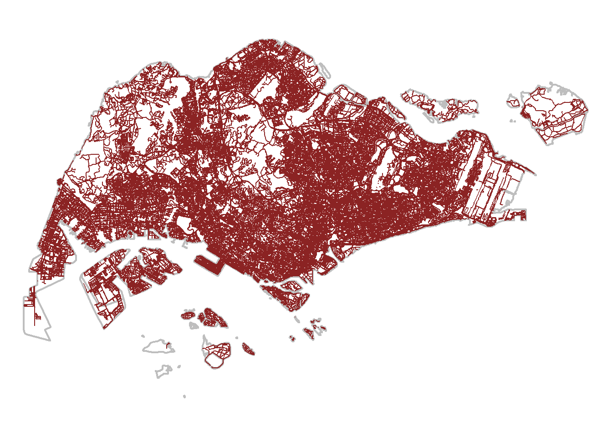
Tip
✅ Task Complete! Road layer within Singapore excluding outer islands.
Extracting Grab trips starting locations
grab_origin <- grab_sf %>%
group_by(trj_id) %>%
arrange (pingtimestamp) %>%
filter(row_number()==1) %>% #first row gives origin location
mutate(weekday = wday(pingtimestamp, #define workday
label = TRUE,
abbr = TRUE), #Monday = MON
start_hr = factor(hour(pingtimestamp)),
day = factor(mday(pingtimestamp))) #to change to ordinal scale
Tip
✅ Task Complete! Grab taxi location points either by origins or destinations.
Extracting Grab trips ending locations
grab_dest <- grab_sf %>%
group_by(trj_id) %>%
arrange(desc(pingtimestamp)) %>% #function from dplyr
filter(row_number()==1) %>% #first row after arranging in desc order gives dest
mutate(weekday = wday(pingtimestamp, #define workday
label = TRUE,
abbr = TRUE), #Monday = MON
end_hr = factor(hour(pingtimestamp)),
day = factor(mday(pingtimestamp))) #to change to ordinal scale
Tip
✅ Task Complete! Grab taxi location points either by origins or destinations.
##Data Cleaning
Select only relevant columnns from Grab
weekday_am_peak <- grab_sf %>%
mutate(weekday = wday(pingtimestamp, label = TRUE, abbr = TRUE),
hour = hour(pingtimestamp)) %>%
filter(weekday %in% c("Mon", "Tue", "Wed", "Thu", "Fri") &
between(hour, 6, 9)) %>%
subset(select = c("trj_id", "pingtimestamp", "weekday", "geometry", "hour"))weekday_pm_peak <- grab_sf %>%
mutate(weekday = wday(pingtimestamp, label = TRUE, abbr = TRUE),
hour = hour(pingtimestamp)) %>%
filter(weekday %in% c("Mon", "Tue", "Wed", "Thu", "Fri") &
between(hour, 17, 20)) %>%
subset(select = c("trj_id", "pingtimestamp", "weekday", "geometry", "hour"))weekend_am_peak <- grab_sf %>%
mutate(weekday = wday(pingtimestamp, label = TRUE, abbr = TRUE),
hour = hour(pingtimestamp)) %>%
filter(weekday %in% c("Sat", "Sun") &
between(hour, 11, 14)) %>%
subset(select = c("trj_id", "pingtimestamp", "weekday", "geometry", "hour"))weekend_pm_peak <- grab_sf %>%
mutate(weekday = wday(pingtimestamp, label = TRUE, abbr = TRUE),
hour = hour(pingtimestamp)) %>%
filter(weekday %in% c("Sat", "Sun") &
between(hour, 16, 19)) %>%
subset(select = c("trj_id", "pingtimestamp", "weekday", "geometry", "hour"))Converting sf data frames to sp’s Spatial* class
Firstly, we’ll need to convert the simple features data frames into Spatial* classes if we can to do SPPA on it:
mpsz <- as_Spatial(mpsz3414)
sg_roads <- as_Spatial(sg_roads)
outline <- as_Spatial(outline3414)
grab_origin <- as_Spatial(grab_origin)
grab_dest <- as_Spatial(grab_dest)
weekday_am_peak <- as_Spatial(weekday_am_peak)Converting from Spatial* classes to sp format
spatstat requires the analytical data to be in ppp object form, but since there is no way to directly convert a Spatial* classes into ppp object, we’ll need to convert the Spatial* classes into a generic Spatial object first, then convert the generic sp object into ppp object form.
# convert into respective sp (in our case, either polygons or points)
mpsz_sp <- as(mpsz, "SpatialPolygons")
sg_roads_sp <- as(sg_roads, "SpatialLinesDataFrame")
outline_sp <- as(outline, "SpatialPolygons")
grab_origin_sp <- as(grab_origin, "SpatialPoints")
grab_dest_sp <- as(grab_dest, "SpatialPoints")
weekday_am_peak_sp <- as(weekday_am_peak, "SpatialPoints")##Converting from sp format to spatstat ppp format
Note that there is no way of coercing SpatialPolygons to ppp format - nor is there any need to. As such, we won’t be including our ‘base maps’, mpsz and sg.
# from sp object, convert into ppp format
grab_origin_ppp <- as(grab_origin_sp, "ppp")
grab_dest_ppp <- as(grab_dest_sp, "ppp")
weekday_am_peak_ppp <- as(weekday_am_peak_sp, "ppp")summary(grab_origin_ppp)Planar point pattern: 28000 points
Average intensity 2.47621e-05 points per square unit
Coordinates are given to 3 decimal places
i.e. rounded to the nearest multiple of 0.001 units
Window: rectangle = [3661.47, 49845.23] x [25201.14, 49685.08] units
(46180 x 24480 units)
Window area = 1130760000 square unitssummary(grab_dest_ppp)Planar point pattern: 28000 points
Average intensity 2.502667e-05 points per square unit
Coordinates are given to 3 decimal places
i.e. rounded to the nearest multiple of 0.001 units
Window: rectangle = [3638.69, 50024.92] x [25350.05, 49469.41] units
(46390 x 24120 units)
Window area = 1118810000 square unitssummary(weekday_am_peak_ppp)Planar point pattern: 503641 points
Average intensity 0.0004460304 points per square unit
*Pattern contains duplicated points*
Coordinates are given to 3 decimal places
i.e. rounded to the nearest multiple of 0.001 units
Window: rectangle = [3638.69, 50039.4] x [25350.05, 49685.08] units
(46400 x 24340 units)
Window area = 1129160000 square unitsNote: grab_origin_ppp objecs has no duplicated points, just to be sure, check again
any(duplicated(grab_origin_ppp)) [1] FALSEany(duplicated(grab_dest_ppp)) [1] FALSEany(duplicated(weekday_am_peak_ppp)) [1] TRUEweekday_am_peak_ppp_jit <- rjitter(weekday_am_peak_ppp,
retry=TRUE,
nsim=1,
drop=TRUE)any(duplicated(weekday_am_peak_ppp_jit)) [1] FALSE##Introducing the owin object
Usually, when analysing spatial point patterns, we’ll confine our analysis within a certain geographical area - such as the Singapore boundary. In spatstat, an object called owin is specially designed to represent this polygonal region. This is also why I mentioned in 5.3 that there was no need (nor existing functions) to convert our ‘base maps’ into ppp - because they’re meant to be converted into owin instead.
##Creating owin object
# using sg_sp as it is the CostalOutline of Singapore, i.e. the whole island's boundary
outline_owin <- as(outline_sp, "owin")
plot(outline_owin)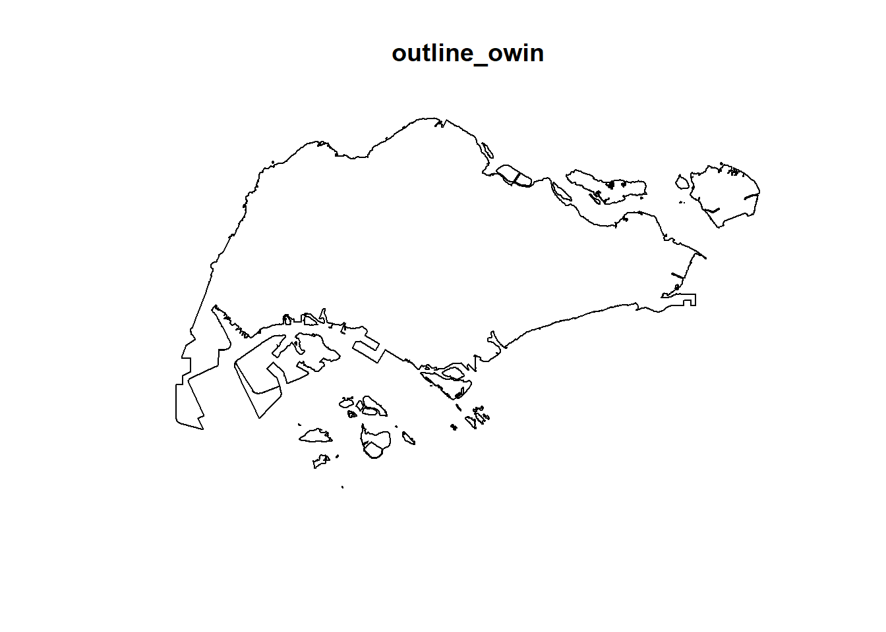
##COMBINING POINT EVENTS OBJECT AND OWIN OBJECT Now, we’ll extract the relevant events that are located within the Singapore:
grab_origin_ppp_sg <- grab_origin_ppp[outline_owin]
plot(grab_origin_ppp_sg)
grab_dest_ppp_sg <- grab_dest_ppp[outline_owin]
plot(grab_dest_ppp_sg)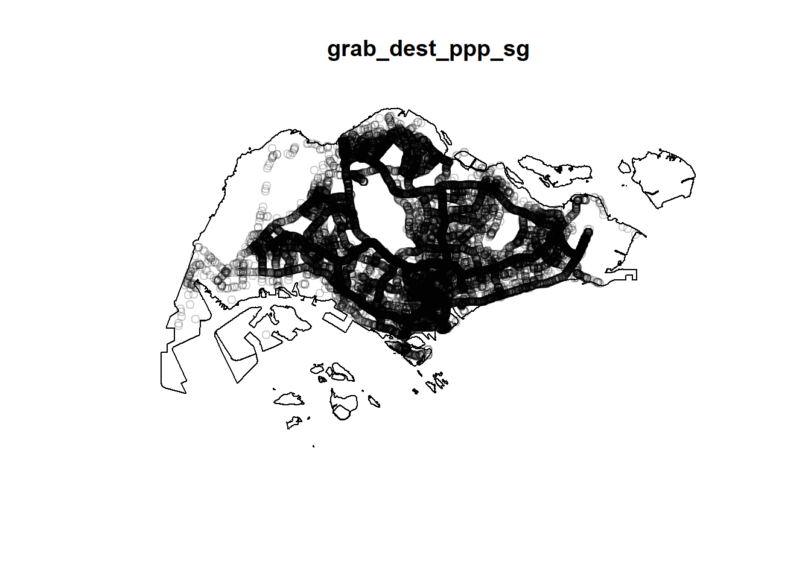
weekday_am_peak_ppp_jit_sg <- weekday_am_peak_ppp_jit[outline_owin]
plot(weekday_am_peak_ppp_jit_sg)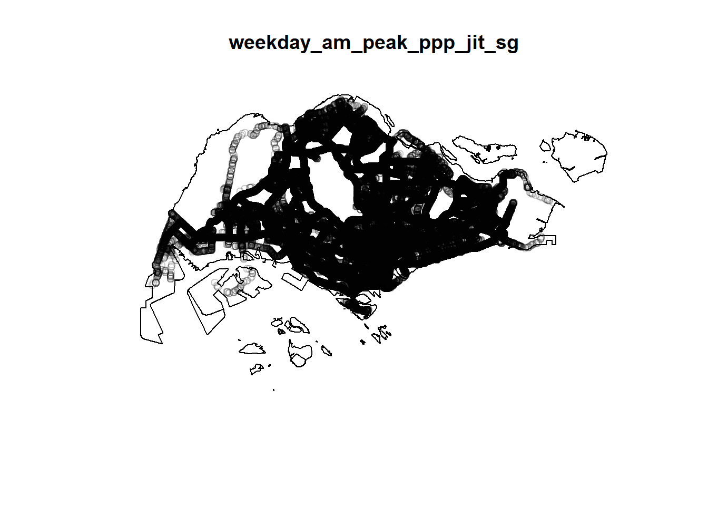
par(mfrow=c(1,3))
plot(grab_origin_ppp_sg)
plot(grab_dest_ppp_sg)
plot(weekday_am_peak_ppp_jit_sg)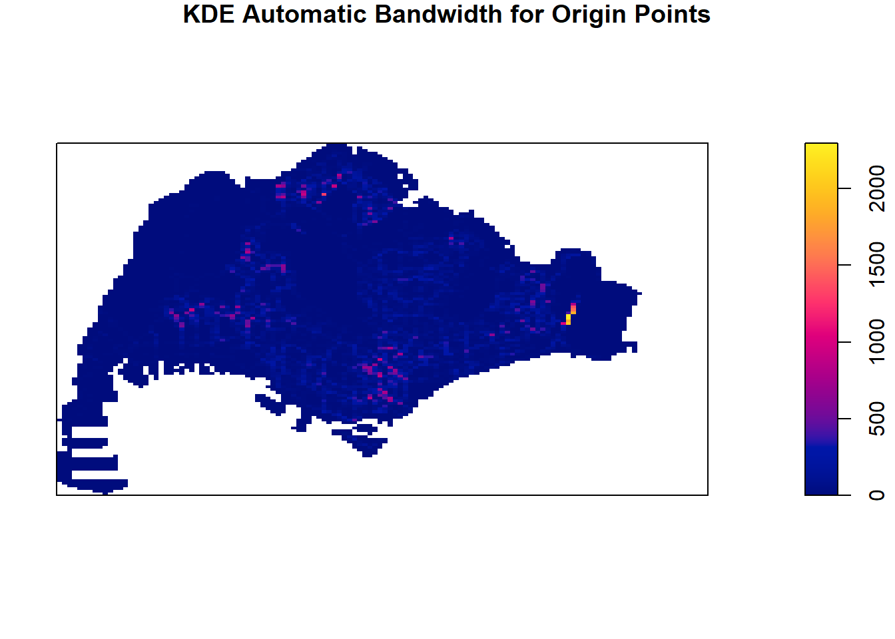
#midpoints <- coordinates(gLineMidpoints(sg_roads_sp))
#sg_roads_ppp <- ppp(midpoints[,1], midpoints[,2], window = #as.owin(outline_owin))
#plot(sg_roads_ppp)EDA
Rescaling to kilometers we’ll need to use rescale() of the spatstat package, so as to convert meters (which SVY21 uses) into kilometers (our desired unit of measurement)
grab_origin_ppp_sg_km <- rescale(grab_origin_ppp_sg, 1000, 'km')
grab_dest_ppp_sg_km <- rescale(grab_dest_ppp_sg, 1000, 'km')
weekday_am_peak_ppp_jit_sg_km <- rescale(weekday_am_peak_ppp_jit_sg, 1000, 'km')6.2 Computing kernel density estimation using automatic bandwidth selection method
going wiht bw.ppl , no significant cluster bw.ppl had warning : Warning: point-in-polygon test had difficulty with 215 points (total score not 0 or 1) so went with bw.diggle
grab_origin_ppp_sg_bw <- density(grab_origin_ppp_sg_km,
sigma=bw.diggle,
edge=TRUE,
kernel="gaussian")Warning: point-in-polygon test had difficulty with 215 points (total score not
0 or 1)grab_dest_ppp_sg_bw <- density(grab_dest_ppp_sg_km,
sigma=bw.diggle,
edge=TRUE,
kernel="gaussian")Warning: point-in-polygon test had difficulty with 215 points (total score not
0 or 1)weekday_am_peak_ppp_jit_sg_bw <- density(weekday_am_peak_ppp_jit_sg_km,
sigma=bw.diggle,
edge=TRUE,
kernel="gaussian")Warning: point-in-polygon test had difficulty with 215 points (total score not
0 or 1)plot(grab_origin_ppp_sg_bw)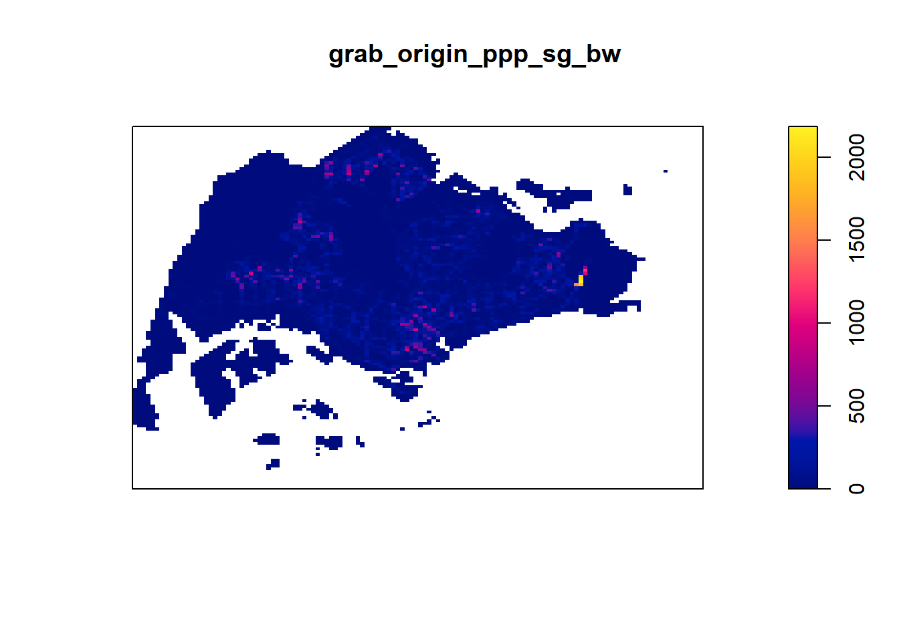
plot(grab_dest_ppp_sg_bw)
plot(weekday_am_peak_ppp_jit_sg_bw)
##Converting KDE output into grid object into RasterLayer object Now, we have to convert our KDE outputs into RasterLayer objects. Since we can’t do that directly, we’ll need to convert them into a SpatialGridDataFrame first, then convert the SpatialGridDataFrame into RasterLayer objects:
grab_origin_ppp_sg_bw_raster <- grab_origin_ppp_sg_bw %>%
as.SpatialGridDataFrame.im() %>%
raster()
grab_dest_ppp_sg_bw_raster <- grab_dest_ppp_sg_bw %>%
as.SpatialGridDataFrame.im() %>%
raster()
weekday_am_peak_ppp_jit_sg_bw_raster <- weekday_am_peak_ppp_jit_sg_bw %>%
as.SpatialGridDataFrame.im() %>%
raster()grab_origin_ppp_sg_bw_rasterclass : RasterLayer
dimensions : 128, 128, 16384 (nrow, ncol, ncell)
resolution : 0.4170614, 0.2647348 (x, y)
extent : 2.663926, 56.04779, 16.35798, 50.24403 (xmin, xmax, ymin, ymax)
crs : NA
source : memory
names : v
values : -3.629998e-13, 2182.76 (min, max)Note that the crs property is NA - let’s do something about that. We’ll assign projection systems again:
# assigns CRS as ESPG Code 3414 aka the SVY21 projection system
# while also specifying the units as km, since we rescaled it in the earlier section
projection(grab_origin_ppp_sg_bw_raster) <- CRS("+init=EPSG:3414 +datum=WGS84 +units=km")
projection(grab_dest_ppp_sg_bw_raster) <- CRS("+init=EPSG:3414 +datum=WGS84 +units=km")
projection(weekday_am_peak_ppp_jit_sg_bw_raster) <- CRS("+init=EPSG:3414 +datum=WGS84 +units=km")##Kernel Density Maps on OpenStreetMap
MAKING A DENSITY MAP FUNCTION
Now, as the assignment requirements has specified, we should plot our kernel density maps on OpenStreetMap, aiming to describe the spatial patterns revealed as well as highlight the advantage of kernel density map over point map. Since we’ll be plotting a lot of kernel density maps, let’s create a function:
density_map <- function(raster_object, map_title) {
tm_basemap("OpenStreetMap") +
tm_shape(raster_object) +
tm_raster("v", alpha=0.65) +
tm_layout(legend.position = c("right", "bottom"),
legend.height = 0.5,
legend.width = 0.4,
main.title = map_title,
main.title.position = 'center',
main.title.size = 1,
frame = FALSE)
} PLOTTING DENSITY MAP
# input: a raster object and the map title
# input: a raster object and the map title
grab_origin_density_map <- density_map(grab_origin_ppp_sg_bw_raster, map_title = "Grab Origin Density Map")
grab_dest_density_map <- density_map(grab_dest_ppp_sg_bw_raster, map_title = "Grab Destination Density Map")
weekday_am_peak_density_map <- density_map(weekday_am_peak_ppp_jit_sg_bw_raster, map_title = "Weekday AM peak Density Map")grab_origin_density_mapVariable(s) "v" contains positive and negative values, so midpoint is set to 0. Set midpoint = NA to show the full spectrum of the color palette.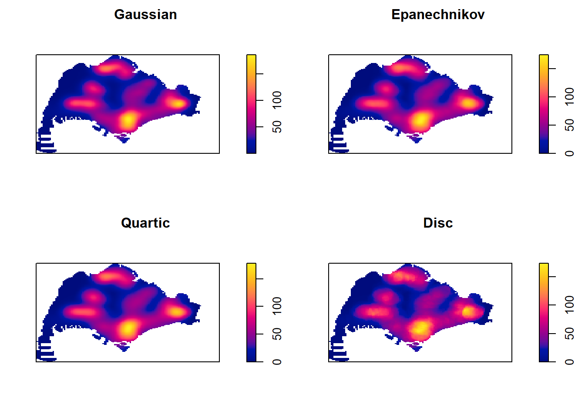
grab_dest_density_mapVariable(s) "v" contains positive and negative values, so midpoint is set to 0. Set midpoint = NA to show the full spectrum of the color palette.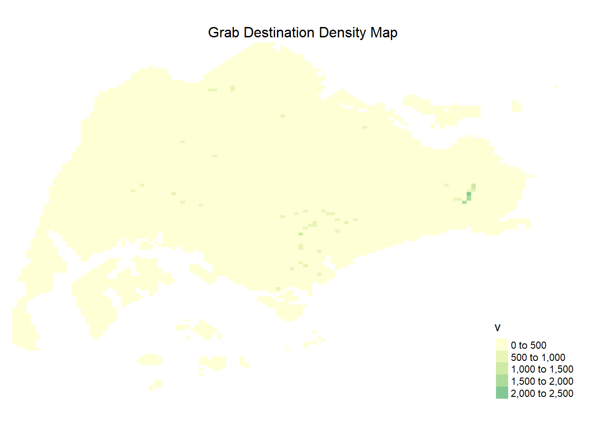
weekday_am_peak_density_mapVariable(s) "v" contains positive and negative values, so midpoint is set to 0. Set midpoint = NA to show the full spectrum of the color palette.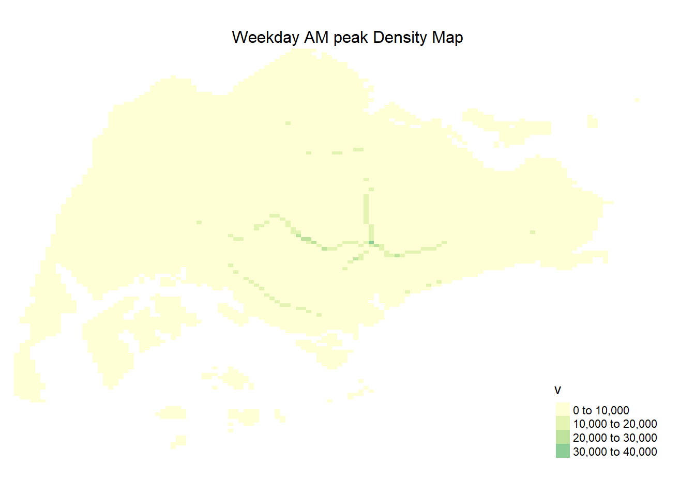
##Kernel Density Maps Analysis
Point Map
tmap_mode("plot")tmap mode set to plottingtm_shape(mpsz3414) +
tm_borders(alpha = 0.5) +
tmap_options(check.and.fix = TRUE) +
tm_shape(sg_roads) +
tm_dots(col="red", size=0.05) +
tm_layout(main.title = "Road Network Point Map",
main.title.position = "center",
main.title.size = 1.2,
frame = TRUE)Warning: The shape mpsz3414 is invalid. See sf::st_is_valid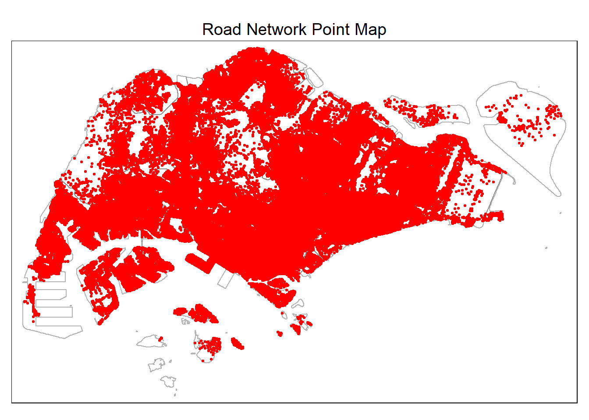
grab_origin_density_mapVariable(s) "v" contains positive and negative values, so midpoint is set to 0. Set midpoint = NA to show the full spectrum of the color palette.
East Region Specific KDE Maps
#central = mpsz_sf[mpsz_sf$REGION_N=='East REGION',]
#central_owin <- central %>%
# as('Spatial') %>%
# as('SpatialPolygons') %>%
# as('owin')
#plot(central_owin)